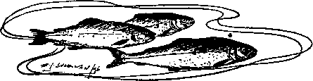

Chapter IX. Experiments In Stocking
Description
This section is from the book "Fly Fishing", by Sir Edward Grey. Also available from Amazon: Fly Fishing.
Chapter IX. Experiments In Stocking
I HAVE never had any opportunity of stocking water on a large scale, but I have made experiments in two ponds, and the results may be of use to others who have similar pieces of water, and may perhaps be interesting or suggestive to those who have more extensive opportunities and can compare my little attempts with larger ones.
The first experiment was made in a new pond, which was excavated in a clay soil. This pond had a bottom of nothing but clay, and was fed by a small trickle coming down an open ditch, which became, however, a rushing turbid flood of surface water after very heavy rain. The pond was some ninety yards long by twenty to thirty yards wide, and varied from two to six feet in depth. Some weed (Chara fcetida) appeared of its own accord, and there was a natural supply of fresh water shrimps.
In May 1887 about 200 yearling Loch Leven trout from Howietown were put into this pond. By the autumn of 1888 these had grown to be from six ounces to half a pound in weight; in June 1889 they averaged about eleven ounces; in the last half of August 1889 seven trout caught with a fly weighed eight pounds, or an average of over one pound apiece. In August 1890 eight trout caught weighed only seven pounds five ounces, and the average for the whole of the season was a little under one pound. This then appeared to be the limit of the average weight that the trout would attain if the pond were kept stocked.
In February 1890 I put in seventy-five two year old Salmo fontinalis, and with these I had an interesting experience in the first autumn flood in the following October. I had constructed a sort of wire trap below the pond, in the hope of catching in it any fish which left the pond during floods. It was a very imperfect affair, for it was quickly blocked by leaves and overflowed, but after the first flood in October we took thirty-nine Salmo fontinalis out of it and replaced them in the pond. As there were at most only seventy-five fontinalis in the pond, it was certain that more than half of them had made a determined effort to get down stream, and it is probable that several others, besides those recaptured, had escaped from the trap and gone away altogether. The number of trout in the pond was about double that of the fontinalis, and yet not a single trout was found in the trap—a striking illustration of the difference in the habits of the two species of fish and of the much greater difficulty of retaining a stock of fontinalis.
In May 1891 the fontinalis in the pond had reached a weight of fourteen ounces; whilst in August one of one pound one ounce was caught, and the last ever seen there was in September 1891. Out of the seventy-five fontinalis put in only seven were killed altogether, and the experiment has in consequence not been repeated.
In regard to trout, on the other hand, out of about 250 (including the 200 yearlings introduced in 1887) put in at various times up to 1892, nearly 100 have been killed with fly, and though many have doubtless escaped during floods, yet there still remain a few in the pond. No small trout have appeared, and it is clear that those which do remain are fish which have been put into the pond artificially and not reared in it naturally. The result altogether has been an interesting illustration of the migratory nature of fontinalis as compared with our own trout, and it should be added that though one or two of the fontinalis appeared for a year or two in the burn below the pond, and found their way into a larger burn well stocked with trout, yet none of them remained there, and they have, I believe, entirely disappeared.
My second experiment was tried in a different place which was originally a quarry. It has been disused for many years, and a natural spring has filled it with water. The place is about 200 yards in length and of varying width, but in no part more than twenty-five yards from bank to bank. The depth of water on the deep side is over ten feet, and may be much deeper for all I know. The water is generally quite clear, and no rain ever dirties it, for there is no inflow except from the hidden-spring, or springs at the bottom. There is no visible outflow, but the water after reaching a certain level must soak into the ground, and probably finds its way into the common covered drains of the field. There are two sorts of weed growing naturally in this water, one is Chara fcetida, which carpets the bottom and is full of fresh water shrimps, and the other is Potomogeton Nutans, a useless stringy thing, with leaves that cover the surface after the middle of July, and which has to be cut every summer in consequence. Into this place 200 yearling Loch Levens were put in May 1887. In the autumn of 1888 the weight of these varied from four ounces to three-quarters of a pound; in June 1889 those caught ran from eight ounces to fifteen ounces; in August one of one and a half pounds was caught, whilst the nine fish killed in that month weighed ten pounds six ounces.
In February 1890 I added 100 two year old Loch Levens. These increased to three-quarters of a pound weight in 1891, and no more were imported into this water after 1890, for the trout have bred in it in spite of the absence of any stream. This seems to me an interesting fact, and it is one which, so far as this water is concerned, is beyond all doubt. In 1892 trout of about four ounces appeared in it; and I have a note to the effect that in 1894, "there are many fat and pretty half-pound trout, which rise freely." Those small fish, it is clear, could not be the two year old trout of 1890, for the latter had grown into mature fish of larger size in 1891 ; and if any doubt still remains it is surely disposed of by the fact that a record has been kept by me of the number of trout killed out of this water, and now amounts to 321 trout of three-quarters of a pound and upwards, against a total of only 300 trout introduced. It must be borne in mind also that my list of the trout killed is probably not complete, for some others, especially of the yearlings in 1887, must have been destroyed either by large gulls or herons, which occasionally visit the place, or by other methods which have not come under my observation. The secret of the breeding of those trout in still water is, I believe, to be found in the fact that there is a very small part of the pool, joined to the rest in ordinary winters, but shut off from open connection with the main body of water in summer. The trout spawn on the stony shallow between the two pieces of water in winter. The ova hatch out, and such of the fry as have taken refuge in the small pool are shut in there, and thus protected from the larger fish when the shallow connection becomes dry in May or June. I have continually found this detached pool, which is only a few yards in length and breadth, full of small trout up to the size of yearlings in summer, and in the following year have noticed a large increase of small fish in the main water. After dry winters, on the other hand, when the shallow has remained dry and the connection with the little pool has never been properly established there has been no increase of small trout. Ova have probably been laid and hatched on other stony shallows, but the fry having no sanctuary have no doubt been devoured by the large fish. One and three-quarter pounds is the weight attained by the largest trout killed hitherto, and one and a half pounds is a common weight.
An experiment was also made with Salmo fontinalis in the same place, arid seventy-five two year olds were put into the water in February 1890. In July 1891 the weight of these ranged from half a pound to three-quarters of a pound, but their condition seemed much better in April than at anytime afterwards. In June 1892 these fontinalis averaged from three-quarters of a pound to one pound, but they had deteriorated in shape and condition. On the other hand, they had evidently bred successfully, for several very fat little fontinalis of a quarter of a pound appeared. Up to the end of 1892 eleven of the original fontinalis had been killed, and since then I have never seen another in the water. Their disappearance is most mysterious. They cannot have escaped, for there is no outlet nor inlet above ground. It may be suggested that the water has been poached: if so, why should the fontinalis alone have been exterminated, while the trout and rainbow trout (to which I will come presently) have survived ? There remains only the choice of two alternatives. Either the fontinalis have all died from some cause, which did not affect the other fish, or else they all, little and big, young and old, suddenly took to living at the bottom and resisting the temptation, not only of artificial flies, but of drop minnows and worms, with which experiments have been made in the hope of discovering them.
This disappearance of the fontinalis is as annoying as it is mysterious, for they were at first most handsome and attractive fish in outward appearance; their sporting qualities were excellent, their flesh brilliant in colour, and the flavour far superior to that of the ordinary trout.
I now come to the rainbow trout (Salmo irideus), of which one hundred two year olds were put into this water in February 1891. In 1892 a few were over half a pound in weight, in 1893 they were about three-quarters of a pound and rose fairly well. Since then they have not attained to more than one and a quarter pounds in weight. They have risen badly, and their flesh though pink is inferior. Twenty of the full-grown rainbows have been killed altogether, but many more have been landed. There appear to be a fair number in the water still, for they take a bait in the deep water better than a fly in the surface, and in more than one year, including 1898, small rainbows of a quarter of a pound and less have been caught, which proves that they too have bred successfully in the still water. The general condition of the rainbows landed has been very inferior to that of the trout, but this is partly accounted for by the fact, that they appear not to be in season during the best of the fly-fishing time. My rainbow trout are full of milt and ova in April, and those we have caught in May and June—the best rising months—have not been fit to eat.
I feel that the value of all these experiments, and the inferences to be drawn from them, are restricted by the tiny scale upon which alone I have had any opportunity of stocking water, but the record of them may perhaps stimulate others to give the result of larger and more valuable experiences. Both the fontinalis and the rainbow trout are such handsome fish, and have such sporting qualities, that I hope efforts to establish them will be continued for some time by experiments made in all sorts of water.

Continue to:
- prev: 4. Black And Orange Spider. Part 3
- Table of Contents
- next: Chapter X. Some Memories Of Early Days